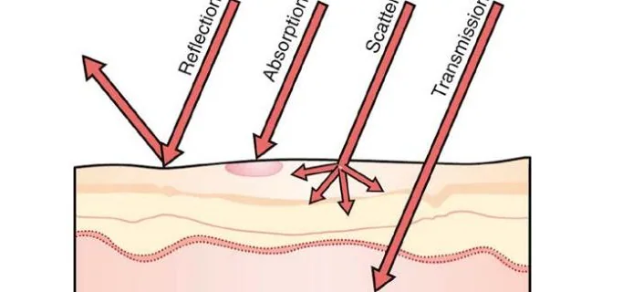

نسخه استخراجشده؛ ترجمه یا تأیید علمی انجام نشده است. وضعیت: captured
لیزر نوری است همفاز، تکطولموج و موازی. آنچه در بافت اتفاق میافتد کاملاً به یک چیز بستگی دارد: کدام مولکول آن طول موج را جذب میکند.

| جذبکننده | کجاست |
|---|---|
| آب | همهجا؛ بهویژه بافت نرم و ساختار معدنی |
| هموگلوبین و ملانین | بافت نرم عروقی و رنگدانهدار |
| هیدروکسیآپاتیت | مینا، عاج، سمان و استخوان |
📌 قاعده حاکم: هیچ لیزری «برای همه کار» نیست. طول موجی که در آب جذب بالایی دارد روی بافت سخت مؤثر است؛ طول موجی که در پیگمان جذب میشود روی بافت نرم و باکتری کار میکند.
این سه با هم فرق دارند و شواهدشان هم یکسان نیست. خلط کردن آنها شایعترین خطای تفسیر در این حوزه است.
| لیزر | طول موج | جذب غالب | کاربرد اصلی |
|---|---|---|---|
| دیود | ۸۱۰ تا ۹۸۰ نانومتر | پیگمان (هموگلوبین، ملانین) | بافت نرم، ضدعفونی پاکت، دپیگمانتاسیون لثه |
| Nd:YAG | ۱۰۶۴ نانومتر | پیگمان؛ نفوذ عمیق | بافت نرم، پروتکل LANAP |
| Er:YAG | ۲۹۴۰ نانومتر | 🔴 آب — بیشترین جذب | تنها لیزری که هم بافت سخت و هم نرم را برش میدهد؛ برداشت جرم |
| Er,Cr:YSGG | ۲۷۸۰ نانومتر | آب | مشابه Er:YAG |
| CO₂ | ۱۰۶۰۰ نانومتر | آب سطحی | برش و انعقاد بافت نرم؛ نفوذ بسیار کم |
🔑 تنها تمایزی که باید بیمکث بلد باشی: برای کار روی سطح ریشه و استخوان، فقط خانواده اروبیوم مناسب است — چون جذب آبی بالا دارد و آسیب حرارتی کمتری به ساختار معدنی میزند.
⚠️ اشتباه رایج ۱: دیود و Nd:YAG نباید مستقیم روی سطح ریشه یا استخوان استفاده شوند؛ جذب آبی پایین یعنی انرژی به گرما تبدیل میشود و ذوب شدن سطح، کربونیزاسیون و نکروز استخوان میسازد.
⚠️ اشتباه رایج ۲: CO₂ عمیقترین نفوذ را ندارد؛ دقیقاً برعکس، سطحیترین است.
انجمن پریودنتولوژی آمریکا موضع روشنی دارد: لیزر میتواند کمکی باشد، اما شواهد کنونی برتری آن بر درمان مکانیکی مرسوم را اثبات نمیکند.
⚠️ اشتباه رایج ۳: اگر در سؤالی «لیزر بهجای SRP» آمد، تقریباً همیشه گزینه نادرست است.
⚠️ اشتباه رایج ۴: LANAP یک پروتکل ثبتشده با Nd:YAG است، نه نام یک دستگاه یا یک طول موج.
📌 ایمنی: عینک محافظ اختصاصیِ همان طول موج برای بیمار، اپراتور و دستیار الزامی است؛ عینک یک لیزر برای لیزر دیگر محافظت نمیکند. تخلیه بخار (plume) هم لازم است.